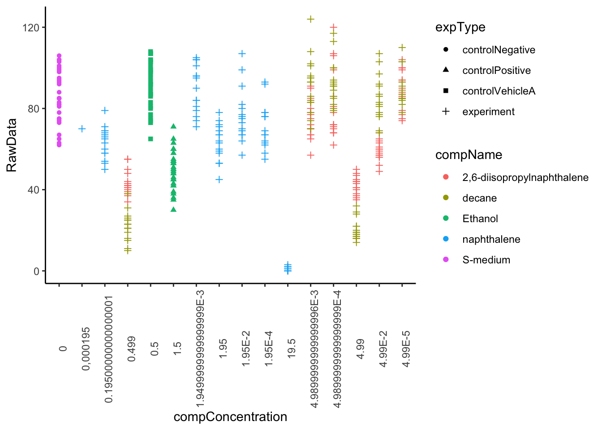
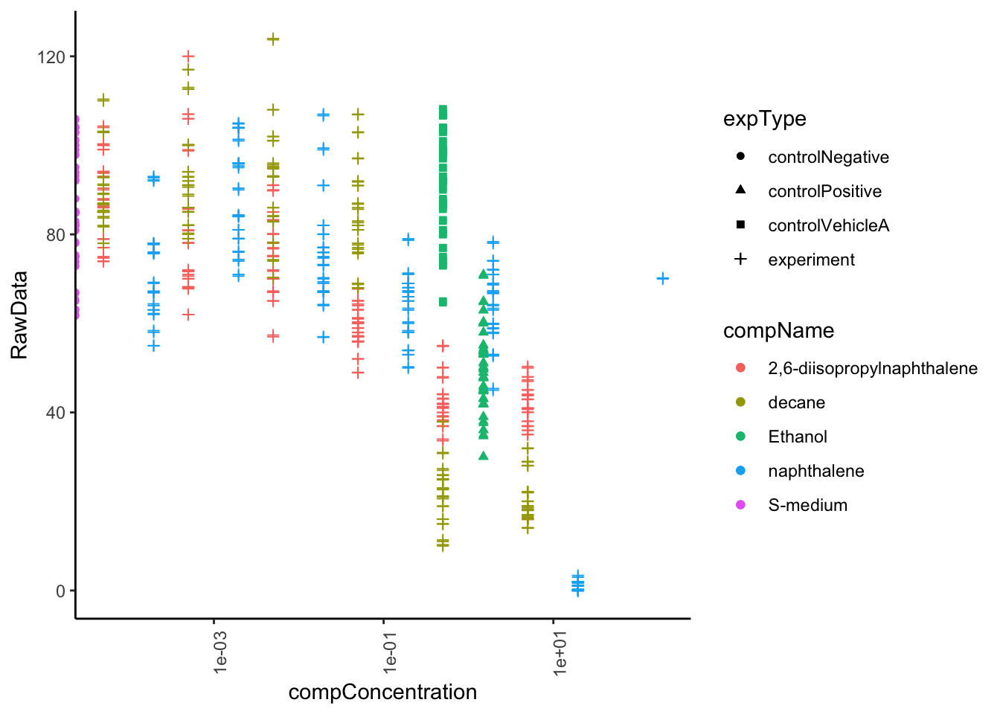
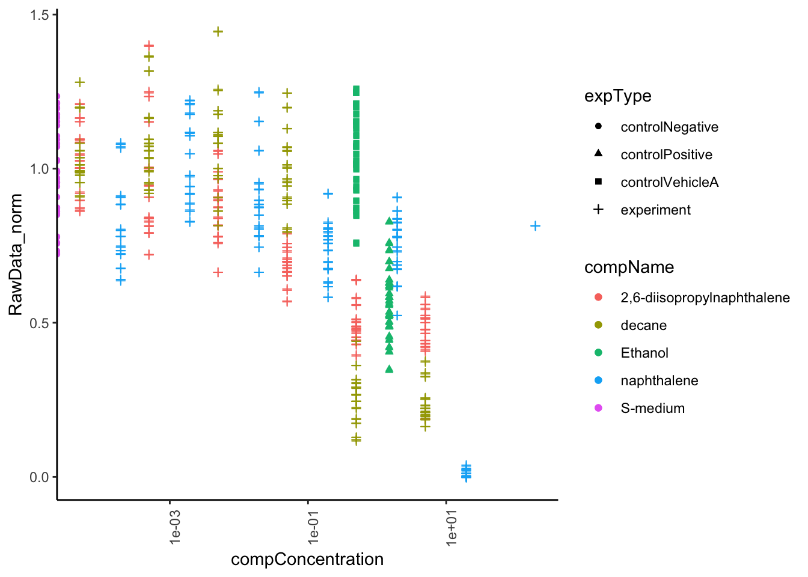

6 Opdracht 4.1
Vraag A
Ongewone observaties:
- De data in kolom expDate is niet zichtbaar, in plaats daarvan kan je alleen #### zien.
- De kolommen plateRow en plateColumn bevatten geen data.
- Kolom bubble bevat alleen maar N/A.
- Het kolom van de RawData loopt nog heel lang door, ondanks dat er geen data meer is op dat punt.
Vraag B
Vraag C
Data types van de kolommen van het bestand:
RawData = dbl
compName = character
compConcentration = character
Wat zou ik verwachten op basis van de experimentele omschrijving?
RawData: integer (een geheel getal)
compName: character
compConcentration = double (een concentratie met decimalen)
De data types van RawData en van compConcentration zijn dan niet correct toegewezen.
Vraag D
library(tidyverse)
ggplot(data = data_ce.liq.flow.062, aes(x = compConcentration, y = RawData)) +
geom_point(aes(colour = compName, shape = expType)) +
theme_classic() +
theme(axis.text.x = element_text(angle = 90))
Vraag E
De x-as is niet op volgorde van een kleine naar een grootte concentratie. Getallen ver in de min staan tussen getallen boven de 0 in.
Dit komt doordat het data type van character klasse is, het wordt dan op volgorde van overeenkomende characters geordend, 0 dan 1 dan 2 enz. in plaats van op basis van de concentratie. E-3 wordt dan ook gezien als character en niet als een wetenschappelijke notatie.
Vraag F
library(dplyr)
library(ggplot2)
#compConcentration omzetten naar double data klasse
data_ce.liq.flow.062_d <- data_ce.liq.flow.062 %>% mutate(compConcentration = sub(",","", compConcentration), compConcentration=as.double(compConcentration))
#x-axis omzetten naar log10 scale en gebruik jitter zodat de punten niet overlappen
ggplot(data = data_ce.liq.flow.062_d, aes(x = compConcentration, y = RawData, colour = compName, shape = expType)) +
geom_point(aes(colour = compName, shape = expType)) +
geom_jitter() +
theme_classic() +
theme(axis.text.x = element_text(angle = 90)) +
scale_x_log10() 
Vraag G & H
The positive control for this experiments is ethanol.
The negative control for this experiment is S-medium.
Vraag I
Voor alle 3 de te testen composities (2,6-diisopropylnaphthalene, decane en naphthalen) zijn er voor elke concentratie 3 vials en uit elke vial worden er 5 metingen gedaan. De positieve, negatieve en vehicle control hebben vaste concentraties.
Stappenplan analyse:
MET COR.TEST
1. Van alle 3 de composities een apart object maken met de pipeline (voorbeeld 2,6-diisopropylnaphthalene): diisopropylnaphthalene <- data_ce.liq.flow.062 %>% filter(compName == “2,6-diisopropylnaphthalene”)
2. Een correlatie analyse uitvoeren voor elk van de 3 compensities met cor.test().
3. Plot de data, x is de compConcentration en y is de RawData.
MET ANOVA 1. Van alle 3 de composities een apart object maken met de pipeline (voorbeeld 2,6-diisopropylnaphthalene): diisopropylnaphthalene <- data_ce.liq.flow.062 %>% filter(compName == “2,6-diisopropylnaphthalene”) 2. Voor alle 3 de te testen composities per concentratie het gemiddelde en de standaardeviatie berekenen met de volgende pipeline: diisopropylnaphthalene_sum <- diisopropylnaphthalene %>% group_by(compConcentration) %>% summarize(mean_progeny=mean(RawData), stdev=sd(RawData)) 3. Data plotten met de pipeline: diisopropylnaphthalene_sum %>% ggplot(aes(x = compConcentration, y = mean_progeny, fill = compConcentration)) + geom_col() + geom_errorbar(aes(ymin = mean_progeny-stdev, ymax = mean_progeny+stdev), width = .2) + theme(axis.text.x = element_text(angle = 90)) 4. Checken voor normaliteit met de shapiro.wilk() optie, dit moet per concentratie gecheckt worden. 5. Uitvoeren van een ANOVA met de functie aov() en de resultaten bekijken met summary.aov().
Vraag J
#Normalize your data
data_normalized <- data_ce.liq.flow.062_d
control_data <- data_ce.liq.flow.062_d[data_ce.liq.flow.062_d$compName == "controlNegative", ]
# Calculate the mean of controlNegative
mean_controlNegative <- mean(control_data$RawData, na.rm = TRUE)
data_normalized$normalized_RawData <- ifelse(data_normalized$compName == "controlNegative",
data_normalized$RawData / mean_controlNegative,
data_normalized$RawData)
#Rerun graph with normalized data
ggplot(data = data_normalized, aes(x = compConcentration, y = normalized_RawData, colour = compName, shape = expType)) +
geom_point(aes(colour = compName, shape = expType)) +
geom_jitter() +
theme_classic() +
theme(axis.text.x = element_text(angle = 90)) +
scale_x_log10() 
Vraag K
Om rekening te houden met biologische verschillen en achtergrond verschillen tussen verschillende experimenten of condities.